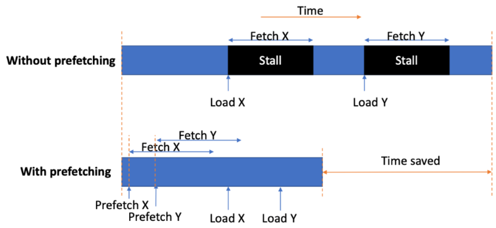
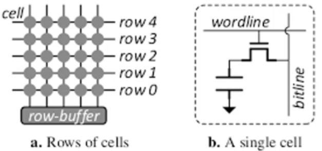
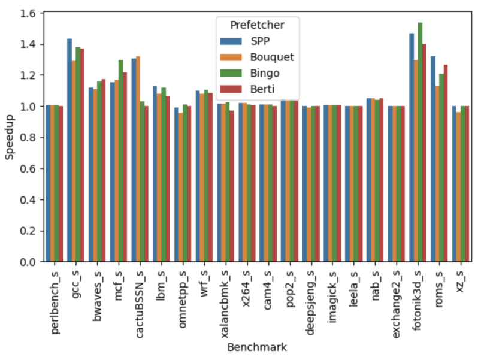
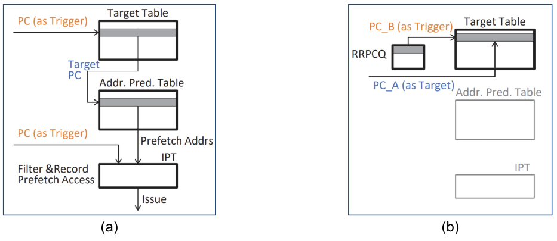
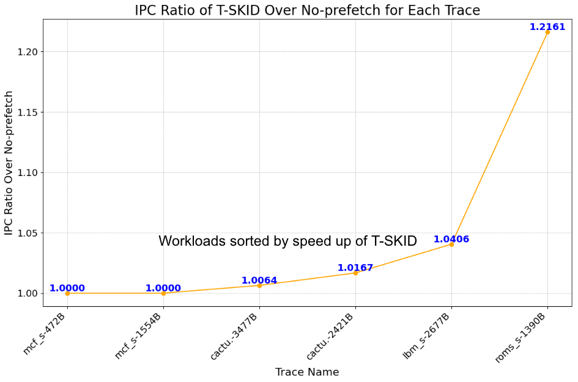
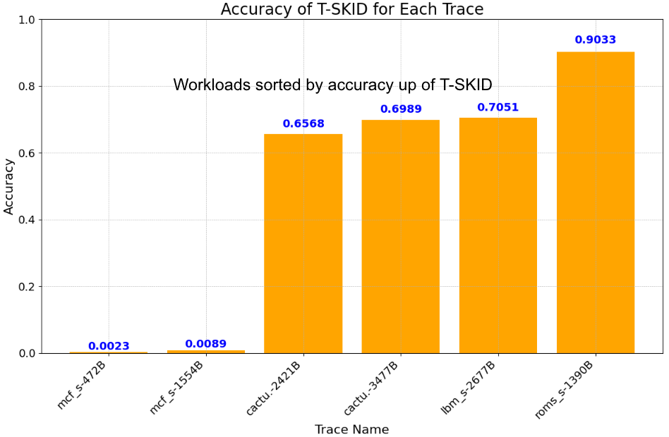
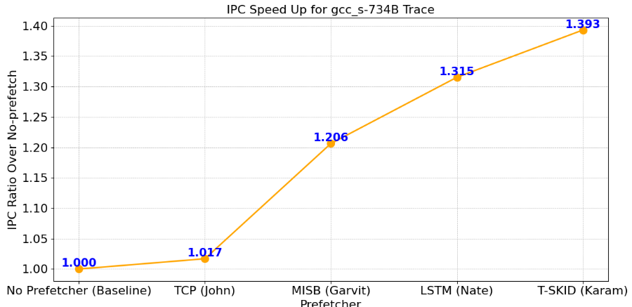
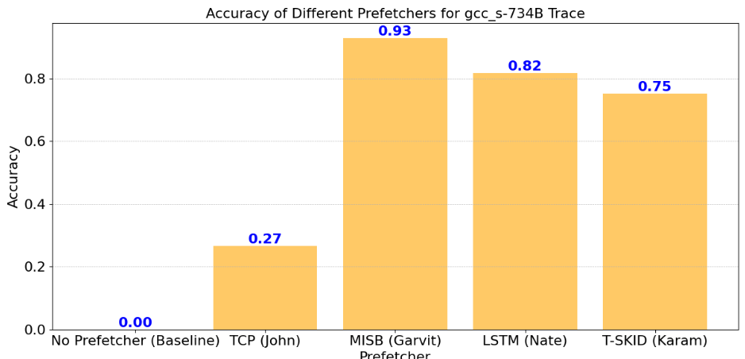

Prefetching is a technique that loads data into the cache before it’s needed. By predicting future data requirements, prefetching improves program execution speed.

Figure 1: Prefetchers explained [1]
Row Hammer is a DRAM vulnerability where frequent access to a memory row causes bit flips in adjacent rows. This issue is worsened by prefetchers, as repeated access to specific rows increases the risk of data corruption.

Figure 2: Cache layout [2]
A trace is a collection of data access patterns. Different prefetchers exploit different patterns, which may range from completely random to highly predictable.

Figure 3: Texas A&M Trace Speedup Survey [3]
The T-SKID prefetcher, which I implemented, is designed to delay prefetching until the optimal moment. This strategic delay prevents unnecessary cache misses and improves cache efficiency.

Figure 4: T-SKID Issuing a prefetch (a), and learning timing (b) [6]

Figure 5: IPC Speedup in single-core configuration

Figure 6: T-SKID Accuracy
Beyond T-SKID, the team implemented and validated additional prefetchers:
The team combined results to analyze:

Figure 7: Integrated Results for IPC Speed Up

Figure 8: Integrated Results for Accuracy
My prefetcher was able to get the highest IPC and the lowest hammer rate when compared to other prefetchers within the project.
Furthermore, we were able to:
1. Improved sponsor’s Row Hammer survey.
2. Successfully validated prefetcher implementations with research papers.
3. Achieved performance speedups and analyzed row activation trends.
4. Developed prefetchers that provide a foundation for further research.